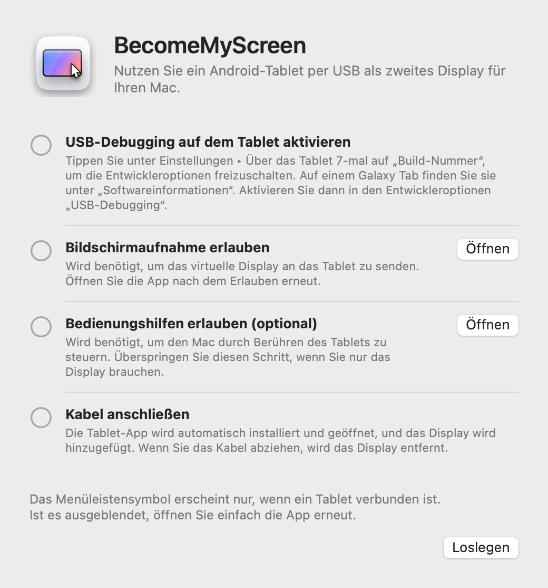
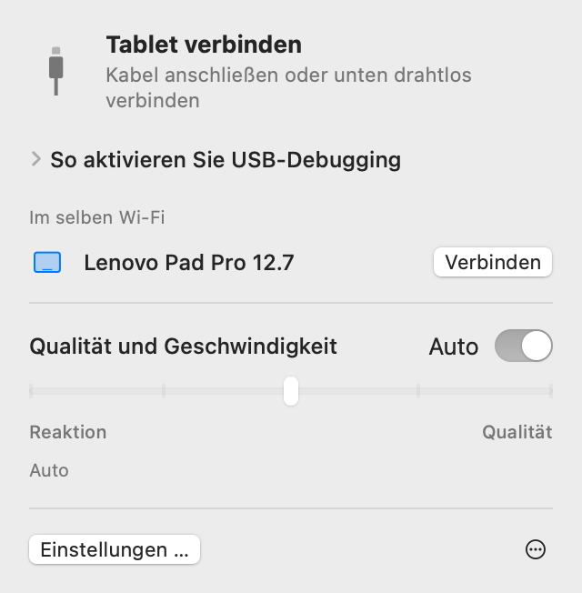
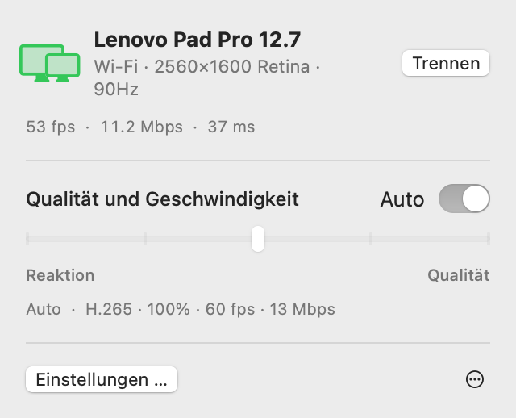
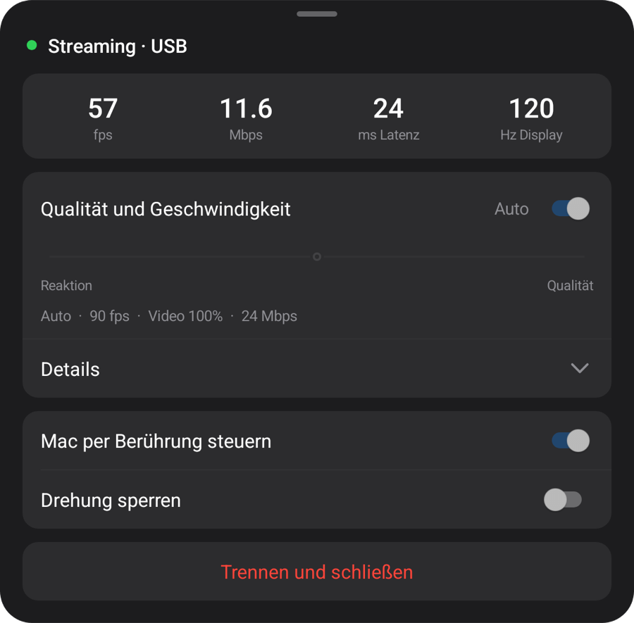
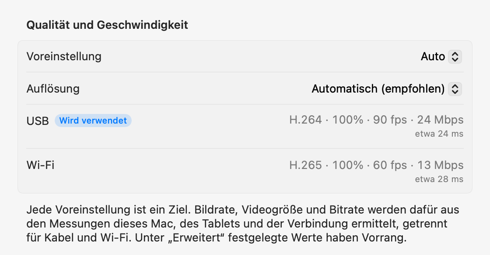

macOS + Windows-Vorschau
Dein Tablet.
Dein Computerbildschirm.
Ein zusätzlicher Bildschirm für deinen Mac. Eine Vorschau mit Bildschirmspiegelung für Windows. Verbinde dein Android-Tablet per USB; der Computer installiert und öffnet die Tablet-App.
Öffnen Sie die ZIP-Datei, bewegen Sie die App in den Ordner „Programme“ und öffnen Sie sie. Für die erste Verbindung siehe Einrichtung.
Öffne diese Seite am Computer, um die App für Mac oder Windows herunterzuladen.

1.0.2 Preview 1
Windows-Vorschau
Jetzt für Windows 11. Native Apps für Intel/AMD x64 und ARM64 in einem Download.

Entpacke die gesamte ZIP-Datei und starte Start-Mirroring.cmd. In virtuellen Maschinen nutze Start-Mirroring-VM.cmd. Aktiviere USB-Debugging am Tablet und erlaube die Verbindung. Die Video-Engine wird beim ersten Start automatisch heruntergeladen; dafür ist Internet nötig.
Die folgenden Anleitungen, Funktionen und Messwerte beziehen sich auf die Mac-Version. Für Windows gilt die Vorschau-Anleitung oben.
Einrichtung
Sie richten alles nur einmal ein. Danach fügt das Anschließen des Kabels das Display hinzu, und im selben Wi‑Fi wird ohne Kabel verbunden.
-
Mac-App installieren
Öffnen Sie die geladene ZIP-Datei, bewegen Sie BecomeMyScreen in den Ordner „Programme“ und öffnen Sie die App. Erlauben Sie die Bildschirmaufnahme und öffnen Sie die App dann noch einmal.
-
USB-Debugging auf dem Tablet aktivieren
Tippen Sie unter Einstellungen › Über das Tablet siebenmal auf „Build-Nummer“, um die Entwickleroptionen freizuschalten. Auf einem Galaxy Tab finden Sie sie unter „Softwareinformationen“. Aktivieren Sie dann in den Entwickleroptionen „USB-Debugging“.
-
Kabel anschließen
Wenn das Tablet fragt, ob USB-Debugging zugelassen werden soll, aktivieren Sie „Von diesem Computer immer zulassen“ und tippen Sie auf „Zulassen“. Der Mac installiert und öffnet die Tablet-App und fügt dann das Display hinzu. Eine separate Tablet-App müssen Sie nicht laden.

Geschwindigkeit
Die Zeit vom Moment, in dem der Mac den Bildschirm aufnimmt, bis das Tablet ihn darstellt. Gemessen mit einem Lenovo Pad Pro 12.7 und einem Mac mit M4 Pro.
| Videogröße | 60 fps | 120 fps |
|---|---|---|
| 100%2560×1600 | 20 ms | 24 ms |
| 75%1920×1200 | 14 ms | 19 ms |
| 50%1280×800 | 11 ms | 16 ms |
Der Hardware-Encoder im Apple Chip komprimiert den Bildschirm in H.264 und sendet ihn per USB, und der Hardware-Decoder des Tablets stellt jedes Bild dar, sobald es ankommt. Bei der ersten Verbindung misst „Auto“, wie viel der Decoder verarbeiten kann, und wählt die höchste Bildrate, bei der er nicht in Rückstand gerät. Auf diesem Tablet waren das 90 fps.
So wurde gemessen: Nach Korrektur der Abweichung zwischen den Uhren beider Geräte haben wir die Zeit zwischen der Aufnahme eines Bildes auf dem Mac und der Darstellung desselben Bildes auf dem Tablet gemessen.
Drahtlos
Ein Tablet, das einmal per USB verbunden war, funktioniert im selben Wi‑Fi auch drahtlos. Ziehen Sie während der Arbeit das Kabel ab, und der Bildschirm läuft über Wi‑Fi weiter.
- Verbinden
- Öffnen Sie die App auf dem Tablet, und es erscheint in der Mac-Menüleiste in der Liste „Im selben Wi‑Fi“. Klicken Sie auf „Verbinden“, und der Bildschirm erscheint.
- Kabel abziehen
- Innerhalb einer Sekunde wird zu Wi‑Fi gewechselt. Das virtuelle Display und Ihre Fensteranordnung bleiben, wie sie sind, und beim erneuten Anschließen geht es zurück zu USB.
- Sicherheit
- Der Schlüssel für drahtlose Verbindungen wird ausschließlich über das USB-Kabel ausgetauscht. Eine Verbindung entsteht erst, wenn der Schlüssel stimmt, und Bildschirm und Eingaben werden vollständig mit AES-256-GCM verschlüsselt.
- Adaptive Taktung
- Das Tablet bestätigt jedes empfangene Bild, und der Mac überspringt so viele Bilder, wie er im Rückstand ist, und passt die Bitrate an. Auch wenn das Wi‑Fi kurz langsamer wird, staut sich keine Verzögerung auf.


| Verbindung | Latenz | Hinweise |
|---|---|---|
| USB | Etwa 20–25 ms | Maximale Bildrate des Tablets |
| Wi‑Fi 5 GHz | 40–55 ms | 60 fps; die Bitrate steigt automatisch bis zur Qualitätseinstellung |
| Wi‑Fi 2.4 GHz | 40–65 ms | Die Latenz springt manchmal über 100 ms, was wie Ruckeln wirken kann |
Gemessen mit einem Lenovo Pad Pro 12.7 bei 2560×1600 und ständig wechselnden Inhalten. Ist das Tablet mit 2,4-GHz-Wi‑Fi verbunden, schlägt die App einen Wechsel zu 5 GHz vor.
Qualität und Reaktion
Wählen Sie eine von fünf Stufen oder belassen Sie es bei „Auto“. Ändern Sie die Einstellung in der Mac-Menüleiste oder im Tablet-Menü, und beide Seiten ändern sich gemeinsam.
| Voreinstellung | Bildrate | Videogröße | Bitrate |
|---|---|---|---|
| Auto | 90 fps | 100% | 24 Mbps |
| 1Schnellste Reaktion | 120 fps | 50% | 8 Mbps |
| 2Schnelle Reaktion | 120 fps | 75% | 14 Mbps |
| 3Ausgewogen | 90 fps | 100% | 24 Mbps |
| 4Hohe Qualität | 90 fps | 100% | 33 Mbps |
| 5Beste Qualität | 60 fps | 100% | 39 Mbps |
Gemessen mit einem Lenovo Pad Pro 12.7 (2560×1600, 120 Hz) per USB an einem Mac mit M4 Pro. Jede Voreinstellung ist ein Ziel: Auf einem anderen Mac oder Tablet und über Wi‑Fi ermittelt sie ihre eigenen Werte aus dem, was dort gemessen wurde. „Auto“ entspricht „Ausgewogen“.
Die Videogröße wird getrennt von der Auflösung festgelegt, die der Mac sieht. Ein kleineres Video füllt trotzdem den Tablet-Bildschirm, entlastet den Decoder und verringert die Latenz entsprechend.
Bei der ersten Verbindung misst die App in etwa 10 Sekunden das Kabel, den Video-Encoder des Mac und den Decoder des Tablets in jedem seiner Modi; beim ersten Mal über Wi‑Fi misst sie das Netzwerk. Jede Voreinstellung wird auf diese Werte abgestimmt, getrennt für Kabel und Wi‑Fi, und in den Einstellungen unter „Erweitert“ können Sie jeden Wert für jede Verbindung festlegen. Bei einem langsamen Kabel werden Sie aufgefordert, es auszutauschen.


Touch
Berühren Sie das Tablet, und der Mac empfängt das als Mauseingabe. Die Funktion ist aktiv, sobald Sie auf dem Mac die Bedienungshilfen erlauben.
| Auf dem Tablet | Auf dem Mac |
|---|---|
| Tippen | Klicken |
| Ziehen | Ziehen |
| Mit zwei Fingern ziehen | Scrollen |
| Mit zwei Fingern tippen | Rechtsklick |
| Mit drei Fingern tippen | Öffnet das Tablet-Menü |
| Mit einem Stift zeichnen | Kommt auf dem Mac als Grafiktablett-Eingabe an, mit Druck und Neigung |
| Stift oder Maus über dem Bildschirm schweben lassen | Bewegt den Zeiger. Berühren mit gedrückter Stifttaste für einen Rechtsklick |
Ein Zeiger, der an seinen Platz zurückkehrt
Wenn Sie das Tablet berühren, springt der Zeiger des Mac an diese Stelle. Bewegen Sie danach die Maus ein wenig, kehrt der Zeiger dorthin zurück, wo er vor der Berührung war. So müssen Sie ihn nicht zu dem zurückziehen, woran Sie auf dem Hauptdisplay gearbeitet haben. Sie können das in den Einstellungen deaktivieren.
Details
- Menüleistensymbol
-
Es wird nur angezeigt, solange ein Tablet verbunden ist. Ist es ausgeblendet, öffnen Sie die App erneut, und es erscheint kurz mit geöffnetem Panel.
- Wartet
- Wird vorbereitet
- Wird verwendet
- Aktion nötig
- Tablet-App öffnen
- Läuft die Tablet-App beim Anschließen des Kabels nicht, öffnet der Mac sie und weckt den Bildschirm, falls er aus ist. Der Sperrbildschirm wird dabei nie umgangen.
- Updates
- Die Mac-App sucht nach neuen Versionen und aktualisiert sich, wann Sie es möchten. Bringt sie eine neuere Tablet-App mit, wird das Tablet per Kabel aktualisiert, bevor das Display startet.
- Hochformat
- Drehen Sie das Tablet ins Hochformat, wird auch das virtuelle Display im Hochformat neu erstellt.
- Bildwiederholrate und Bildschirm-Timeout
- Während des Streamings wird die Bildwiederholrate des Tablets gehalten, damit sie nicht auf 60 Hz fällt, und der Bildschirm schaltet sich nicht aus.
- Kabelprüfung
- Verbindet sich USB mit weniger als 480 Mbps, bleibt die Übertragung unter 8 MB/s oder bricht die Verbindung innerhalb von drei Minuten dreimal ab, schlägt die App ein anderes Kabel oder einen anderen Anschluss vor.
- Wenn die Verbindung abbricht
- Wird das Kabel abgezogen, läuft der Bildschirm über Wi‑Fi weiter. Ist das drahtlos nicht möglich, bleibt das virtuelle Display noch eine Weile erhalten. Verbindet sich das Tablet in dieser Zeit erneut, bleibt Ihre Fensteranordnung, wie sie war.
- „Trennen“ und „Neu verbinden“
- Klicken Sie in der Menüleiste auf „Trennen“, und der Bildschirm des Tablets wird pausiert, auch wenn das Kabel angeschlossen bleibt. Klicken Sie auf „Neu verbinden“, um fortzufahren.
- Die Tablet-App schließt sich selbst
- Wenn am Tablet gar nichts angeschlossen ist, nicht einmal ein Ladegerät, schließt sich die Tablet-App nach 10 Sekunden. Kann sie stattdessen auf eine drahtlose Verbindung warten, wartet sie 2 Minuten.
Systemanforderungen
- Mac
- Mac mit Apple Chip, macOS 14 oder neuer
- Windows
- Windows 11 · Intel / AMD x64 · ARM64 · Windows-Vorschau
- Tablet
- Android 8.0 oder neuer, auf einem Gerät, auf dem sich USB-Debugging aktivieren lässt
- Kabel
- Ein USB-Kabel, das Datenübertragung unterstützt. Mit reinen Ladekabeln kommt keine Verbindung zustande. Ein Anschluss direkt am Mac ist zuverlässiger als ein Hub.
- Drahtlos
- Mac und Tablet müssen im selben Wi‑Fi sein; 5 GHz wird empfohlen. Die erste Verbindung muss per USB erfolgen.
- Berechtigungen auf dem Mac
- Bildschirmaufnahme. Außerdem Bedienungshilfen, um den Mac per Berührung zu steuern, und Lokales Netzwerk für die drahtlose Nutzung.
Häufige Fragen
Windows-Vorschau
Diese Vorschau spiegelt den vorhandenen Bildschirm. In unserer ARM64-Testumgebung blockierte Windows die Treiberinstallation; nutze dort die ZIP-Datei. Der erweiterte Desktop auf physischen x64-PCs ist noch nicht verifiziert. Versionshinweise und bekannte Grenzen
Muss ich eine App auf dem Tablet installieren?
Nein. Die Tablet-App ist in der Mac-App enthalten. Wenn Sie das Kabel anschließen, installiert und öffnet der Mac sie. Wenn Sie die Mac-App aktualisieren, wird die Tablet-App bei der nächsten Verbindung mitaktualisiert.
Funktioniert es über Wi‑Fi?
Ja. Nachdem Sie einmal per USB verbunden haben, verbindet es sich von da an im selben Wi‑Fi drahtlos. Öffnen Sie die App auf dem Tablet und klicken Sie in der Mac-Menüleiste auf „Verbinden“, oder ziehen Sie während der Nutzung einfach das Kabel ab. Die Latenz ist etwas höher als per USB (40–55 ms bei 5 GHz), und 2,4-GHz-Wi‑Fi kann gelegentlich ruckeln, daher wird 5 GHz empfohlen.
Warum muss die erste Verbindung per USB erfolgen?
Weil der Schlüssel für drahtlose Verbindungen nur über das Kabel ausgetauscht wird. So kann sich kein anderes Gerät im selben Wi‑Fi als Ihr Tablet ausgeben und mit Ihrem Mac verbinden. Dabei wird auch die Tablet-App installiert.
Funktioniert der Stiftdruck?
Ja. Druck und Neigung des Stifts kommen in macOS als Grafiktablett-Eingabe an (Druck, Neigung und Nähe). Da die Standard-Stifteingabe von Android genutzt wird, brauchen der S Pen und Lenovo-Stifte kein zusätzliches SDK und keinen Treiber. Getestet mit dem Stift für das Lenovo Pad Pro 12.7.
Mit welchen Tablets funktioniert es?
Mit jedem Tablet mit Android 8.0 oder neuer, auf dem sich USB-Debugging aktivieren lässt. Entwicklung und Messungen erfolgten auf einem Lenovo Pad Pro 12.7 (2944×1840, 120 Hz); andere Geräte wurden noch nicht selbst getestet. Auflösung und Ausrichtung des virtuellen Displays richten sich beim Verbinden nach dem Bildschirm des Tablets.
Warum gibt es die App nicht im App Store?
Zum Erstellen des virtuellen Displays nutzt die App eine nicht öffentliche macOS-Funktion, daher kann sie nicht im App Store erscheinen. Stattdessen ist sie mit einem Apple-Entwicklerzertifikat signiert und von Apple notarisiert, sodass sie sich direkt nach dem Laden öffnen lässt.
Warum braucht die App Bildschirmaufnahme und Bedienungshilfen?
Bildschirmaufnahme nimmt das virtuelle Display auf, um es an das Tablet zu senden, Bedienungshilfen wandelt Berührungen und Stifteingaben des Tablets in Mac-Eingaben um, und Lokales Netzwerk findet Tablets im selben Wi‑Fi. Der Bildschirm wird nur über das USB-Kabel oder innerhalb Ihres Wi‑Fi übertragen (drahtlos verschlüsselt) und gelangt nie ins Internet.
Die Verbindung bricht immer wieder ab.
Probieren Sie ein anderes Kabel, das Datenübertragung unterstützt, oder schließen Sie es statt an einen Hub direkt an einen Anschluss am Mac an. Die App weist Sie vorab darauf hin, wenn USB langsam verbindet oder oft abbricht. Nach einem kurzen Abbruch bleibt das virtuelle Display 15 Sekunden erhalten und macht dort weiter, wo es aufgehört hat.
Was ist, wenn das Tablet gesperrt ist?
Der Mac weckt den Bildschirm und öffnet die App, umgeht aber nie die Sperre. Entsperren Sie das Tablet mit Ihrer PIN oder Ihrem Muster, und die Verbindung steht sofort.
Funktioniert es auf Intel-Macs?
Die aktuelle Version ist nur für Mac-Computer mit Apple Chip.
Download
Öffne diese Seite am Computer, um die App für Mac oder Windows herunterzuladen.
Öffnen Sie die ZIP-Datei, bewegen Sie die App in den Ordner „Programme“ und öffnen Sie sie. Für die erste Verbindung siehe Einrichtung.